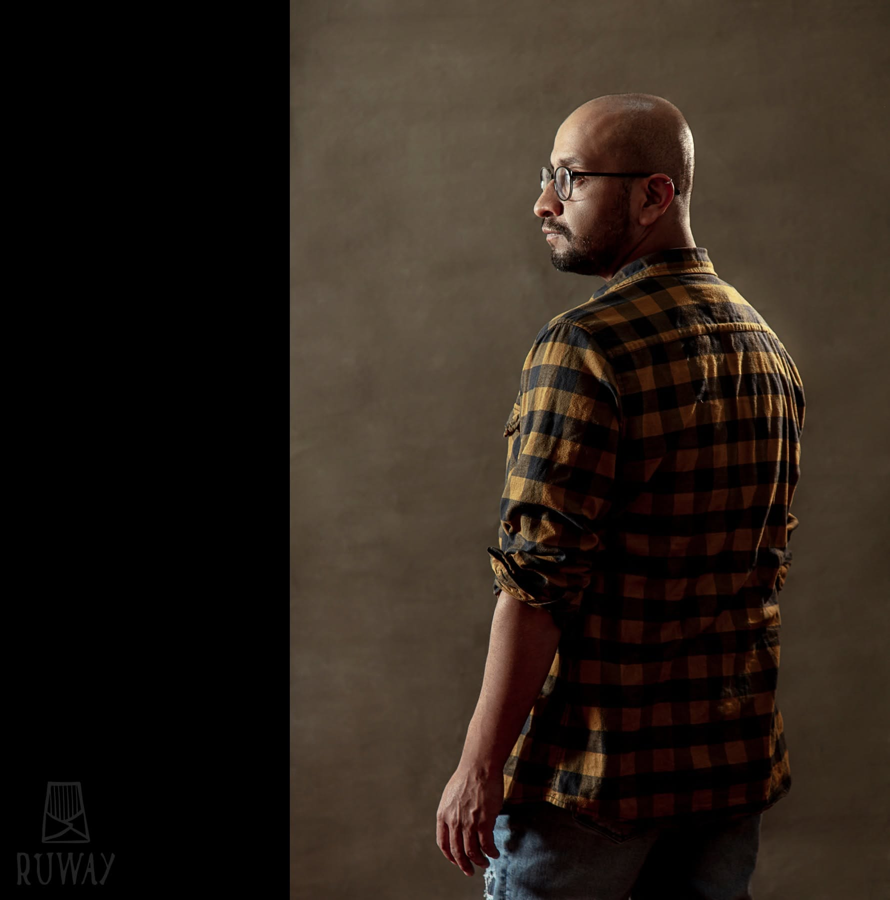
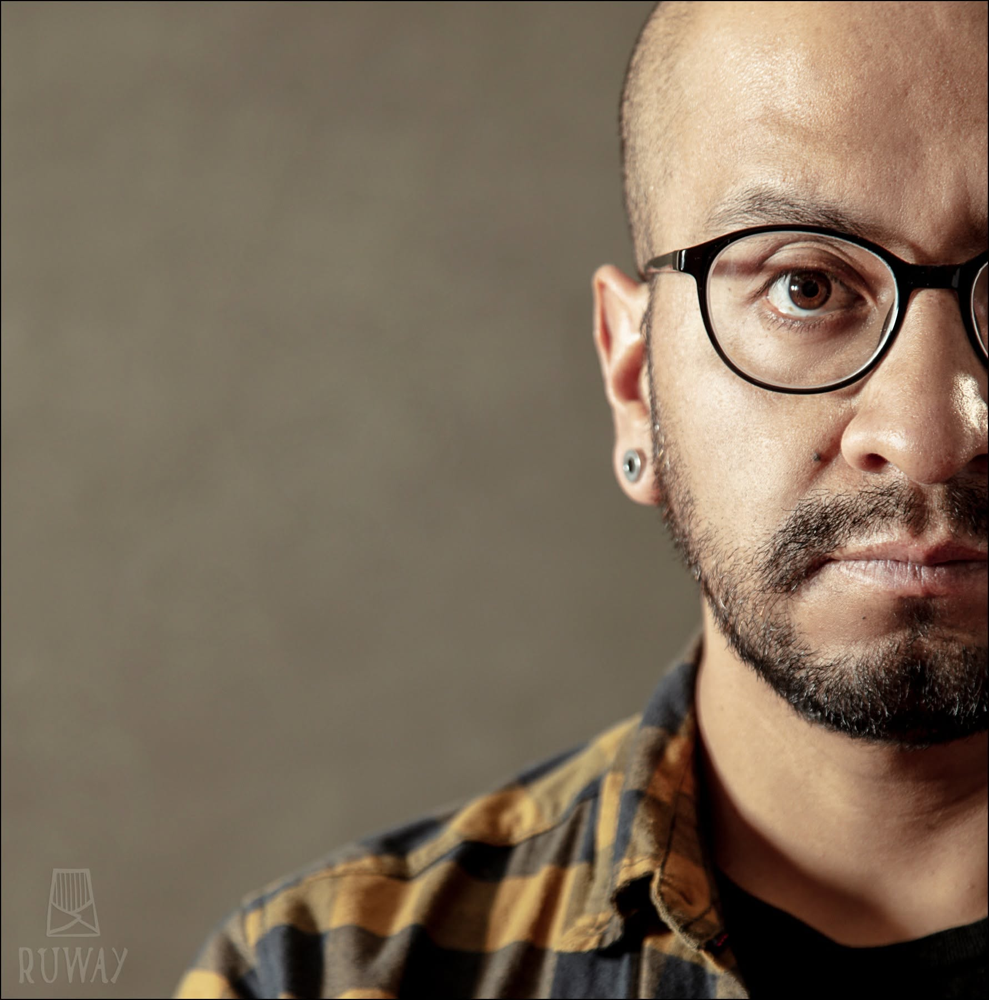

El estudio
Su obra explora el encuentro entre lo cotidiano y lo íntimo, construyendo un universo de color donde las emociones, las experiencias y la identidad adquieren una nueva dimensión.
A — Obra seleccionada
Proyectos
recientes
Una selección de piezas, murales y exploraciones gráficas.
B — Materia y forma
Cuerpos
imposibles
Escultura, ensamblaje y experimentación material. Figuras que habitan entre lo humano, lo ritual y lo onírico.
Archivo expandido · 12 registros
Obra gráfica, espacio público, procesos y otras exploraciones.


C — El artista
Narrar desde
el color.
Reynaldo Monzón Fernández Baca es un artista visual cusqueño, graduado de la Universidad Nacional Diego Quispe Tito del Cusco.
Su práctica cruza dibujo, pintura, escultura, ilustración e intervención mural. Figuras humanas, símbolos orgánicos, memoria e identidad andina conviven en composiciones donde el color funciona como lenguaje y territorio.
Desde Cusco, desarrolla imágenes que conectan experiencias íntimas con relatos colectivos. Cada pieza propone un espacio para mirar, recordar y reconocerse.
- Formación
- Universidad Nacional Diego Quispe Tito del Cusco
- Práctica
- Pintura · Escultura · Ilustración · Muralismo
- Territorio
- Cusco · Perú
D — Proceso
Pequeños
universos
Estudios en tinta: ojos, flores, hilos y silencios.


Reynaldo MonzónCusco, Perú
El arte comoterritorio íntimo.
E — Contacto
Hagamos algo
inolvidable.
Para murales, exposiciones, colaboraciones y proyectos especiales.
Conversemos